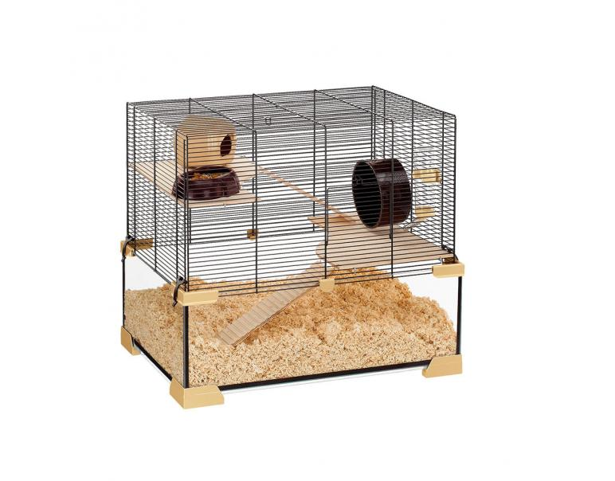
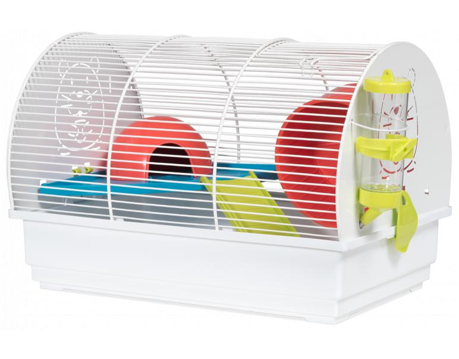
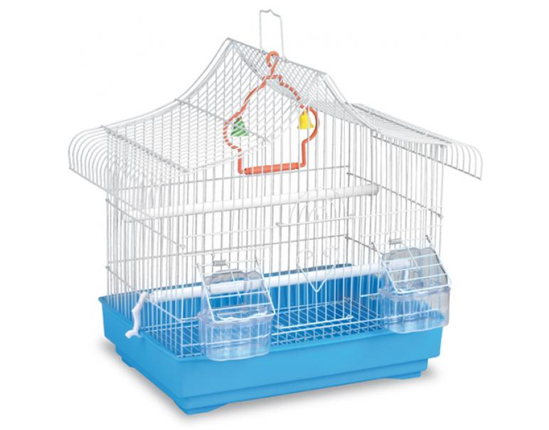
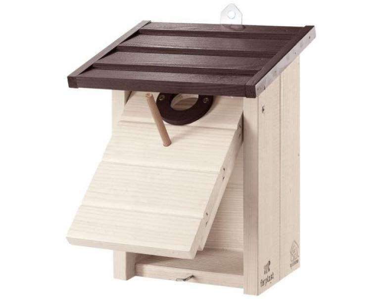
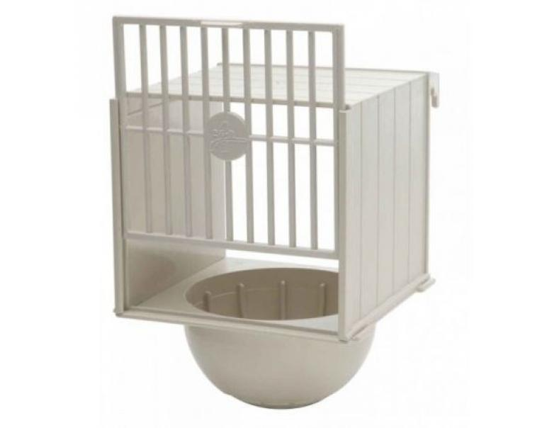
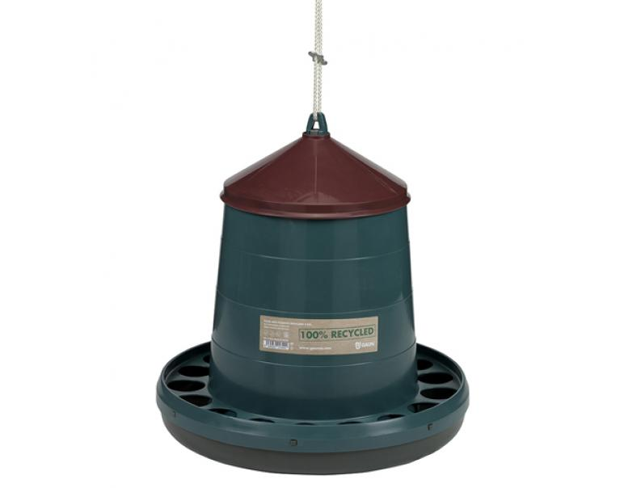

39 x 25,50 x 27cm. Color: Blanco
Otro beneficio es que se puede extraer con facilidad y lavar a mano, el secado es bastante rápido.
Fuente de productos: Mascoteros.com
| Nombre producto | Muestra | Descripción | ¿Disponible? | Precio |
|---|---|---|---|---|
| Ferplast Jaula Karat80 Cristal 78,5x45,5x52,5cm |  | Jaula especialmente diseñada para hámster o ratón. Su formato especial (con tanque de cristal transparente) permite una visión completa del roedor en el interior, a la vez que favorece que la mascota cave y se oculte en el serrín. Trae accesorios tales como: caseta, comederos, bebedero y rueda de ejercicios. Incluye pies de plástico. |
|
$769158,02 |
| Voltrega Jaula para Hámster Ruso y Roborosky Modelo 111 39 x 25,50 x 27cm. Color: Blanco |
 | Jaula especialmente para hámster ruso y roborowsky. Se trata de un modelo grande, compacto, básico y económico, que cuenta con lo indispensable para la mascota. Producto fabricado en España por la prestigiosa marca Voltrega; en los cuales los materiales usados para fabricar esta jaula están libres de toxicidad: plástico polipropileno y metal pintado con pintura epoxi sin plomo. Incluye: |
|
$119298,16 |
| Gaun Jaula Pájaros Modelo Mónica 34x23,5x36cm |  | De diseño elegante, con comederos dobles, posaderas y un balancín para maximizar la diversión de los pájaros.
Se caracteriza por el sofisticado techo a dos aguas curvo, con aleros sobresalientes en ambos lados. Además, la base de plástico tiene 4 relieves en las esquinas para generar mayor estabilidad. Por otro lado, es fácil de limpiar y tiene rejilla en la parte baja que independiza la bandeja para el aseo. |
|
$110864,31 |
| Ferplast Nido para Aves Silvestres N5 Blanco 28,8x17,6x26,8cm |  | Excelente nido especialmente diseñado para colocarse en exteriores y que aniden las aves silvestres. Tiene formato de caseta, y viene equipada con puerta móvil y un posadero.
Cuenta con un robusto gancho para fijarla a árboles u otro sitio. Con abertura de entrada, y techo inclinado. En el espacio interno las aves pueden depositar sus huevos. Se puede abrir para hacer la limpieza. Ventajas: |
|
$102793,21 |
| 2G Pet Food Nido Externo Lujo 12x12x17hcm Diámetro: 10cm. |  | 2 Get Pet Food Nido Externo modelo Lujo es la solución para la etapa de la anidación de tus preciosas aves de jaula. Está elaborado en plástico rígido de alta resistencia y durabilidad, que incluye puerta rejilla de desplazamiento vertical y posa huevos.
Es el accesorio para la anidación de aves indispensable debido a su diseño que facilita la montura en la jaula y es lo más higiénico frente a otros nidos que utilizan madera. El plástico utilizado es un polímero no tóxico, aún si el ave pretende picotear no le hará daño.
Otro beneficio es que se puede extraer con facilidad y lavar a mano, el secado es bastante rápido. |
|
$17275,79 |
| Gaun Tolva Aves Plástico Reciclado 8kg |  | recipiente indispensable para alimentar a gallinas y aves de casa, que destaca por su anillo antidesperdicio de alta eficacia. Tiene una capacidad para 8 Kg.
Esta tolva de la marca Gaun ha sido fabricado en material de plástico reciclado de primera calidad, muy resistente y duradero. A su vez, es un producto muy ligero y se adapta a cualquier tipo de necesidad. Ventajas: |
|
$84111,78 |